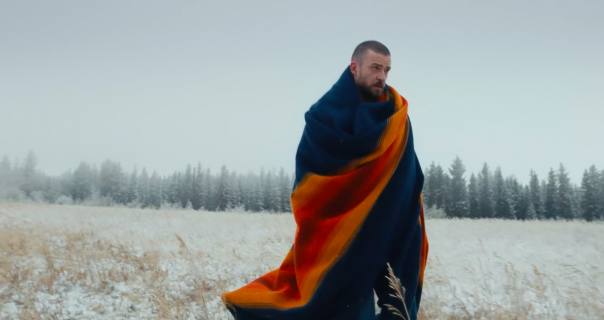
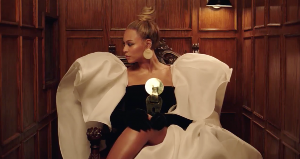
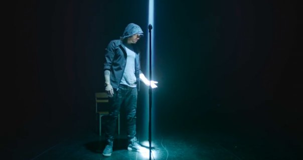

01.Stigla potvrda o novom Justin Timberlake albumu
03.01.2018.
 Justin Timberlake nekoliko puta je iznova kretao svoju karijeru, a sada se čini da radi isto. Spremio je, kaže, najličniji album do sada. Inspirisan je sinom, suprugom, kao i rodnim mestom.
Dakle, Justin Timberlake pošao je u šume, da sebe traži.Album Man of the Woods(link ) dobijamo par dana nakon njegovog tridesetsedmog rođendana, 2. februara. Odličan tajming i zbog toga što će 4. februara nastupiti na poluvremenu Superbowla.
Prvi singl stiže u petak i biće interesantno videti kako će biti primljen. Za sada, veoma loše su reakcije na promenu imidža. Mnogi ga ismevaju da želi da zvuči kao Bon Iver.Biće ovo prvi JT-ev album od 2013. godine, ali treba napomenuti da smo pre dve imali njegovu Happy verziju sa Can't Stop The Feeling, kao i soundtrack za prošlogodišnji film The Book of Love.
02.Beyonce, Blue Ivy i mnogo poznatih u novom Jay-Z spotu
30.12.2017.
Osmi album za redom debitovao na prvom mestu
Nakon kratke kampanje, Jay-Z je objavio još jedan ambiciozni video za pesmu sa svog, za osam Grammy-a nominovanog albuma 4:44. Pesma se zove Family Feud(link ) i trebalo bi da zaokruži priču započetu albumom Lemonade koji nam je dala njegova supruga.
Glavni deo spota je u nekakvoj crkvi gde je gospodin Sean Carter okajava svoje grehove pred gospođom Carter koja je sveštenik, žrtva i pokajnik u isto vreme.
Režiser spota je Ava DuVernay, a uradila je veliki posao jer veze priču staru više od četristo godina. Radnja kreće u godini 2444 i ide unazad. Trajanje videa je osam minuta, a poslednja tri u fokusu imaju složnu porodicu koja je prošla kroz muževljevo neverstvo. Ostale uloge tumače Thandie Newton, Michael B. Jordan, Jessica Chastain, Omari Hardwick, David Oyelowo i America Ferrera.
Susan Kelechi Watson iz This Is Us igra odraslu Blue Ivy, a tu su i Brie Larson, Janet Mock, Constance Wu, Niecy Nash, Rosario Dawson, Rashida Jones i Mindy Kaling koja je tada bila trudna sa ćerkom Katherine.
Nažalost, ali sasvim očekivano, video je, za sada, Tidal ekskluziva.
03.Eminem postigao uspeh koji niko pre njega nije
25.12.2017.
Osmi album za redom debitovao na prvom mestu
Reper Eminem izbacio je svoj novi album Revival i odmah skočio na prvo mesto prestižne Billboard liste. To je njegov osmi album za redom da postiže ovakav uspeh, što je svojevrsni presedan.
Osim što je postigao istorijski uspeh, treba napomenuti i da su same cifre ovog albuma impresivne. Čak 267 hiljada jedinica prodaje albuma u prvoj nedelji!
Ovome su svakako doprinele saradnje sa drugim velikim zvezdama kao što su Beyonce(link ) i Ed Sheeran(link ).